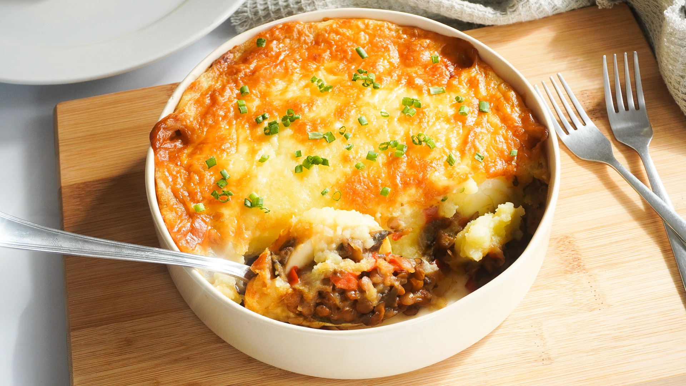

Home
Shepherd's pie

Description
A hearty, savory dish featuring minced meat cooked with vegetables in a rich gravy, topped with creamy mashed potatoes and baked until golden. A classic comfort food that’s satisfying and full of flavor.
Ingredients
- 1 onion
- 2 cloves garlic
- 2 carrots
- 500 g ground beef (or lamb)
- 1 tablespoon tomato paste
- 1 cup beef or vegetable stock
- Salt and pepper
- Butter
- 1 kg potatoes, peeled and cut into chunks
- ½ cup milk
- Grated cheese, for topping (optional)
- Nutmeg, to taste (optional)
Steps
- Prepare the Filling:
Heat a drizzle of olive oil or a knob of butter in a large skillet over medium heat. Add the chopped onion and cook until soft and translucent.
- Stir in the minced garlic and diced carrots, cooking for a few minutes until slightly tender.
- Add the ground beef (or lamb) and cook, breaking up the meat with a spoon, until browned all over.
- Mix in the tomato paste and sprinkle over the flour if using. Stir well to combine. Pour in the stock, season with salt and black pepper, and simmer for about 10-15 minutes, until the mixture thickens slightly and the flavors meld. Remove from heat.
- Prepare the Mashed Potatoes:
Meanwhile, place the potatoes in a large pot of salted water. Bring to a boil and cook until tender when pierced with a fork. Drain well.
- Mash the potatoes with the butter and milk until smooth and creamy. Season with salt, black pepper, and a pinch of nutmeg if desired.
- Assemble the Pie:
Preheat the oven to 180°C (350°F). Spread the meat mixture evenly in a baking dish. Spoon the mashed potatoes on top, smoothing them out with a spatula. If you like, sprinkle grated cheese over the surface.
- Bake for 20-25 minutes, or until the top is lightly golden and the filling is bubbling around the edges.
- Let stand for a few minutes before serving. Enjoy warm!